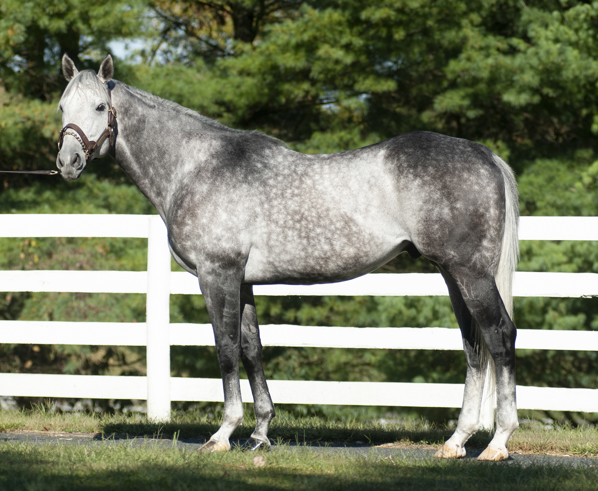

Blofeld
Quality Road – Storm Minstrel, by Storm Cat. Undefeated at two, a graded stakes winner at three distances, and now one of the Mid-Atlantic's most consistent sires.
At a glance
| Pedigree | Quality Road – Storm Minstrel, by Storm Cat Free 5-cross pedigree on Equineline → |
|---|---|
| Color / foaled | Gray or roan horse, 2012 |
| Height | 16.1 hands |
| 2026 fee | $5,000 live foal Payable when foal stands and nurses |
| Race earnings | $745,420 |
| Nominations | Breeders' Cup · Maryland Million |
| Ownership | Property of a syndicate |
Stallion compatibility analysis available on request.

By the numbers
Stakes winners
- Beach Daze $461,410
- Charming Way $326,511
- Miss Harriett $280,390
- Chickiness $266,255
- Silver Kiss $219,140
- Beautiful Blome $200,640
- Code of Silence
- Iniziamo
Stakes placed
- Crabs N Beer $425,376
- Mugatu $201,868
- Majestic Blue
Recent highlights
Code of Silence won the Maryland Juvenile Stakes in December 2025, then ran third in Laurel's Spectacular Bid Stakes in February 2026. Early in 2026, Blofeld was one of only three Mid-Atlantic sires with more than $500,000 in progeny earnings for the year.
On the big stage
Mugatu ran in the 2024 Preakness Stakes after a fifth-place finish in the Blue Grass (G1). Crabs N Beer, Blofeld's first winner, was second in the Dinner Party Stakes (G3).
A brilliant juvenile who kept winning
Bought as a two-year-old for $225,000 by JSM Equine and Glencrest Farm, Blofeld was named for the James Bond villain. He went undefeated in three starts at two, breaking his maiden in a Saratoga maiden special weight before winning the Grade 2 Futurity and the Grade 2 Nashua Stakes at Belmont Park.
He placed in the $100,000 William Walker Stakes at three, and at four won the Grade 2 Gulfstream Park Handicap with a 103 Beyer. He won at distances from five furlongs to a mile, earning $745,420.
Pedigree
Sire: Quality Road. Winner of 8 races and $2,232,830, including the Woodward (G1), Florida Derby (G1), Metropolitan Handicap (G1) and Donn Handicap (G1). Sire of Abel Tasman, Caledonia Road, City of Light, Spring Quality, Hootenanny and many other stakes winners.
Dam: Storm Minstrel. Multiple stakes winner of $299,339. Second dam is multiple graded stakes winner Colonial Minstrel ($556,586), and the female line traces to the great racemare Gallorette.
Book a mare to Blofeld
$5,000 live foal for 2026. Call for a mating analysis or to see him in person.